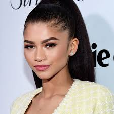

Thomas Stanley Holland (born 1 June 1996) is an English actor.
A graduate of the BRIT School in London, he began his acting career on stage in the title role of Billy Elliot the Musical in the West End from 2008 to 2010. He gained further recognition for his starring role in the disaster film The Impossible (2012), receiving the London Film Critics Circle Award for Young British Performer of the Year.
Holland rose to stardom for playing Spider-Man in the Marvel Cinematic Universe superhero films Captain America: Civil War (2016), Spider-Man: Homecoming (2017), Avengers: Infinity War (2018), Avengers: Endgame (2019), Spider-Man: Far From Home (2019) and its sequel (2021). In 2017, twenty-year-old Holland became the youngest BAFTA Rising Star recipient
Entertainment tonight interview

Zendaya
Zendaya Maree Stoermer Coleman ; born September 1, 1996) is an American actress and singer. She began her career as a child model and backup dancer, before gaining prominence for her role as Rocky Blue on the Disney Channel sitcom Shake It Up (2010–2013).
In 2013, Zendaya was a contestant on the sixteenth season of the competition series Dancing with the Stars. From 2015 to 2018, she produced and starred as the titular spy, K.C. Cooper, in the sitcom K.C. Undercover. Her performance as a teenage drug addict in the HBO drama series Euphoria (2019–present) led her to become the youngest winner of the Primetime Emmy Award for Outstanding Lead Actress in a Drama Series. Her film roles include supporting parts in the musical drama The Greatest Showman (2017) and the superhero film Spider-Man: Homecoming (2017) and its sequel, Spider-Man: Far from Home (2019).
Zendaya began her career in music by recording songs independently and releasing the singles "Swag It Out" and "Watch Me" in 2011, the latter a collaboration with Bella Thorne. She signed with Hollywood Records in 2012 and later released her debut single, "Replay", which reached number 40 on the Billboard Hot 100 chart in the United States. In 2013, her self-titled debut studio album debuted at No. 51 on the Billboard 200 chart. "Rewrite the Stars", taken from the soundtrack to The Greatest Showman, was released as a single in 2018. It reached the top twenty of the United Kingdom and Australian national charts and was certified platinum in the United States and the United Kingdom as well as double platinum in Australia.
zendaya "MJ" interview
Jake Gyllenhaal
Jacob Benjamin Gyllenhaal is an American actor and film producer. Born into the Gyllenhaal family, he is the son of director Stephen Gyllenhaal and screenwriter Naomi Foner. He began acting as a child, making his acting debut in City Slickers, followed by roles in his father's films A Dangerous Woman and Homegrown.